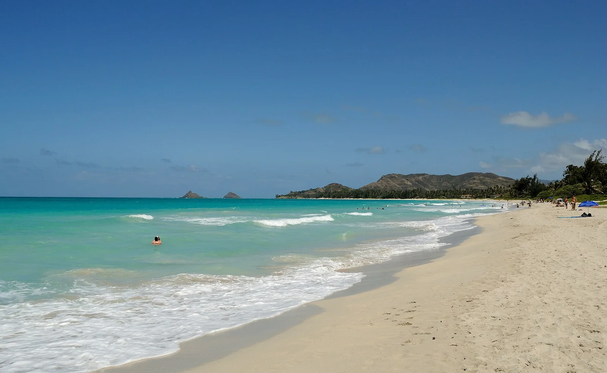

Kailua Beach
Oahu, Hawaï, États-Unis · kitesurf, kayak, paddle, baignade

Plage de sable blanc sur la côte au vent d’Oahu, avec les îlots des Mokuluas au large. Paradis du kayak et du kite.
- Lieu
- Oahu, Hawaï, États-Unis
- Niveau
- Débutant
- Activités
- kitesurf, kayak, paddle, baignade
- Type d'eau
- Mer / océan
- Coordonnées
- 21.40, -157.73 (position approximative du secteur)
Dangers à connaître
- Alizés soutenus.
- Îlots réservés aux oiseaux.
Le conseil d'Ocean Buddy
Les Mokuluas sont protégées : on ne débarque que sur la plage autorisée.
Ouvrir dans Ocean Buddy Télécharger sur l'App Store
Source : Fiche Ocean Buddy · septembre 2026 · à vérifier localement.